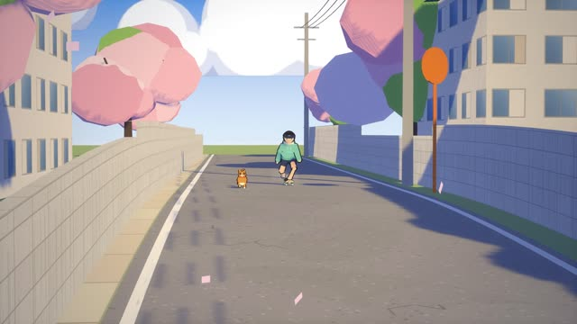
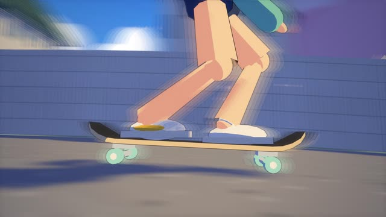
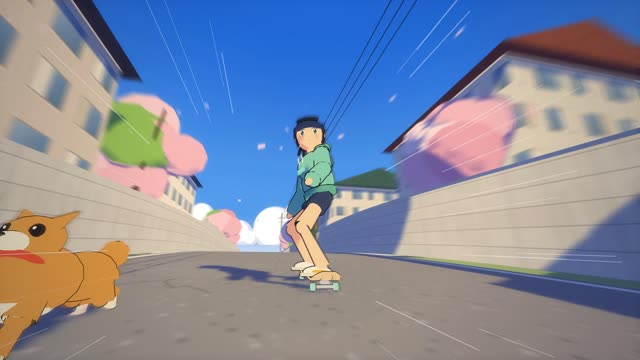
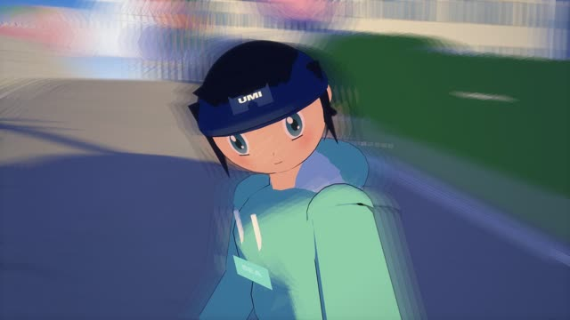
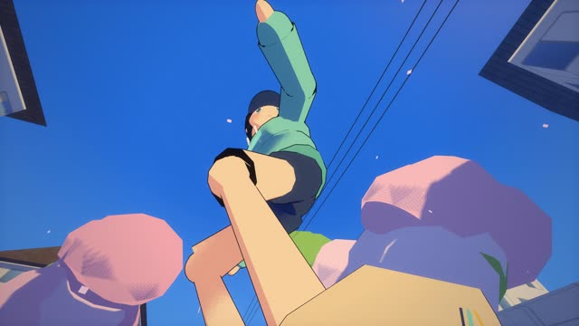
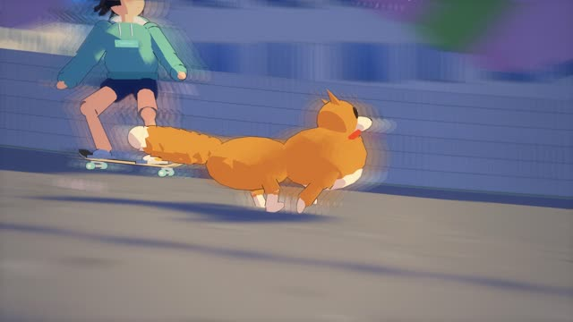
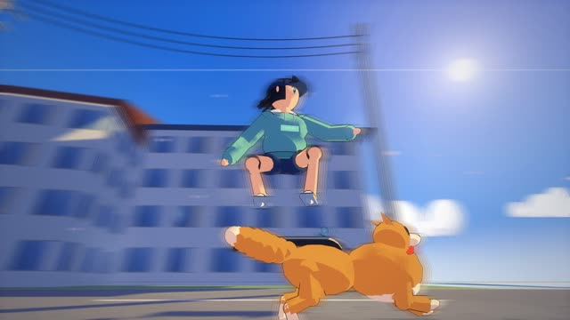
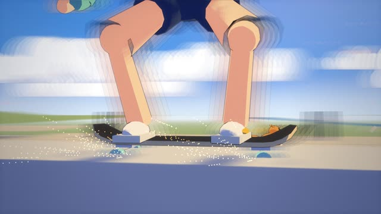
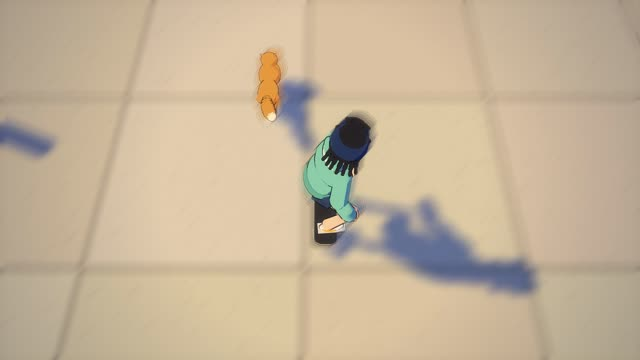
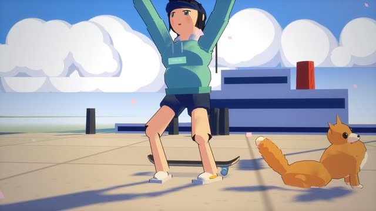

작업 흐름
- 입력
- 주제 하나(마지막 페리를 잡으러 가는 소녀와 코기, 새벽 배달 소년과 까마귀, 방학 첫날 …). 레퍼런스 영상이 있으면 그 스틸과 컷 길이
- 브리프
- 가야 할 곳과 이유 · 라이더(체형 · 무게 · 스탠스 · 모자 · 후드 · 보드 그림) · 동반 동물(종류 · 털 · 무게 · 달리는 버릇) · 계절과 빛 · 4–6곳의 길 · 이야기 시간의 비트(트릭마다 모으기 → 동작 → 착지) · 비트 단위 샷 목록 · 곡을 적은
BRIEF.md - 캐스트
- 데이터로 새로 설계한 라이더와 동물(
cast.js), 여섯 방향 · 핵심 포즈 좌우 · 걸음 · 도약 · 앉기를 한 장에 렌더한 캐스트 시트로 채점 - 라이드와 샷
- 속도 · 차선 · 트릭을 이야기 시간으로 키잉하고, 그 동작 아래에 동네를 배치(
K.planter({ tau }), 그라인드 턱은 자동). 비트 단위 컷마다 다른 카메라, 슬로모션은 트릭에만 - 확인
- 모든 샷 그리기 · 결정성 · 비트 위의 컷 · 카메라 종류 · 벽 속 카메라 없음 · 피사체가 화면 안 · 관절 범위 · 디딘 발과 발바닥 미끄러짐(mm) · 도약 전 모으기 · 숨 쉬는 대기 · 밀지 않고 빨라지지 않기 · 악보
- 출력
- 30fps 1920×1080 MP4(그루브 · 바퀴 구르는 소리 · 팝 · 착지 · 그라인드 · 짖는 소리 포함), ♪ 버튼으로 소리까지 재생하는 라이브 페이지
cd street-run-montage/examples/ferry-bell
node ../../scripts/check.mjs cast.html
node ../../scripts/check.mjs index.html
node ../../scripts/render.mjs index.html --sheet 16 --scale .5
node ../../scripts/score.mjs index.html
node ../../scripts/render.mjs index.html --workers 4 --audio out/ferry-bell.wav
node ../../scripts/new-run.mjs ../../../my-run요구 사항: Node + Playwright Chromium, ffmpeg. 네트워크와 GPU가 필요 없습니다(SwiftShader로 미리보기 한 프레임 약 0.13초, 1080p 약 1초, 37초 영상을 워커 4개로 몇 분). 단계별 순서는 SKILL.md에 있습니다.
샘플
원본에 없는 주제로 처음부터 만든 예제 「The Ferry Bell」의 샷들과, 그 캐스트 시트, 시작 템플릿입니다. 카드를 누르면 브라우저에서 바로 재생되는 라이브 페이지가 열립니다.
「The Ferry Bell」 36.8초 · 16컷 · 124bpm
마지막 페리 종이 울리자 하나와 코기 모치가 언덕 위에서 상점가와 방파제를 지나 터미널까지 달립니다. 봄 오후, 벚꽃과 꽃잎.

샷 1 · wide · 8박언덕 위
골목 끝 망원으로 본 출발. 벚꽃 아래 작은 두 실루엣

샷 2 · feet · 4박밀어 차기
바퀴 높이 카메라. 뒷발이 땅을 디딘 채 보드가 앞으로 나감

샷 3 · low-front · 4박내리막
렌즈 쪽으로 내려오는 하나와 옆을 달리는 모치, 속도선

샷 4 · face · 4박눈 맞춤
모치를 내려다보는 얼굴. 고개가 향한 쪽에서 잡은 클로즈업

샷 5 · worm · 슬로모션화단 넘기
땅에서 올려다본 올리. 하늘을 배경으로 반 속도

샷 6 · buddy · 4박모치
코기의 전용 샷. 짧은 다리의 빠른 보폭, 꼬리, 귀

샷 8 · low-side · 슬로모션킥플립
들린 두 발 아래에서 한 바퀴 도는 보드, 해 쪽 플레어

샷 10 · feet · 6박방파제 그라인드
턱 위를 미끄러지는 트럭에서 튀는 불꽃

샷 13 · orbit · 4박셔빗
트릭 주위를 도는 카메라

샷 16 · hero · 10박도착
보드에서 내려 환호. 뒤에는 페리, 앉아서 짖는 모치
캐스트 시트 · 템플릿 장면을 쓰기 전에 보는 것
몸이 물리적으로 가능한지, 양쪽 방향이 한 사람으로 읽히는지 먼저 봅니다. 템플릿은 새 작품의 출발점이고, 주제에 맞게 새로 설계합니다.
실제 작품
이 레포에서 만든 스킬입니다. 원본 게시물의 형식(셀 셰이딩, 비트마다 바뀌는 카메라, 배경 블러, 라이더와 동물의 질주)을 코드로 새로 지었고, 출연진 · 동네 · 샷은 가져오지 않았습니다.
링크
- SKILL.md 워크플로
- 폴더 lib · scripts · references · templates · examples
- README.md 빠른 시작
- references/BRIEF.md 주제 → 브리프, 캐스트 · 스틸 검토 기준
- references/LOOK.md 원본에서 본 것과 룩의 수치
- references/CAMERA.md 샷 문법 · 카메라 14종 · 컷 규칙
- references/MOTION.md 무게 · 모으기 · 디딘 발 · 검사 수치
- references/KIT.md API
- references/LESSONS.md 겪은 문제와 해결